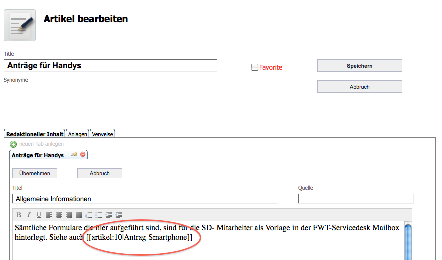
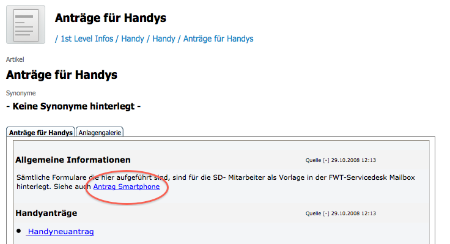

Was ist ein interner Link?
In der Wissensdatenbank gibt es sogenannte interne Links welche auf andere, artverwandte Artikel, verweisen können. Diese Links werden innerhalb von
Textbaustein verwendet. Um einen internen Link zu erstellen, muss die Id des zu verlinkende Artikels in doppelte eckige Klammern und dem Schlüsselwort artikel:gesetzt werden.
Beispiele: [[artikel:2334]] oder [[artikel:10|Antrag Smartphone]]
Nach dem Einfügen und Speichern des Link in einem Textbaustein wird der Link auf der Seite angezeigt.
Wie und wo füge ich einen internen Link ein?

Wie wird dieser interne Link dargestellt?

Was ist zu beachten
Links sollten sparsam und sinnführend sein. Der Text muss auch ohne Links lesbar, verständlich und informativ sein. Zu viele Links lenken von den wichtigen Links ab, geben ein unruhiges Schriftbild und erschweren das Querlesen, da zu viel Aufmerksamkeit auf Unwichtiges gelenkt wird. Aus diesen Gründen ist es schlechter Stil, fehlende Informationen durch viele Links zu ersetzen. Gute Links sollten tatsächlich nur dorthin führen, wo es entweder Erläuterungen (Fachbegriffe) oder weiterführende Informationen zum Thema gibt.